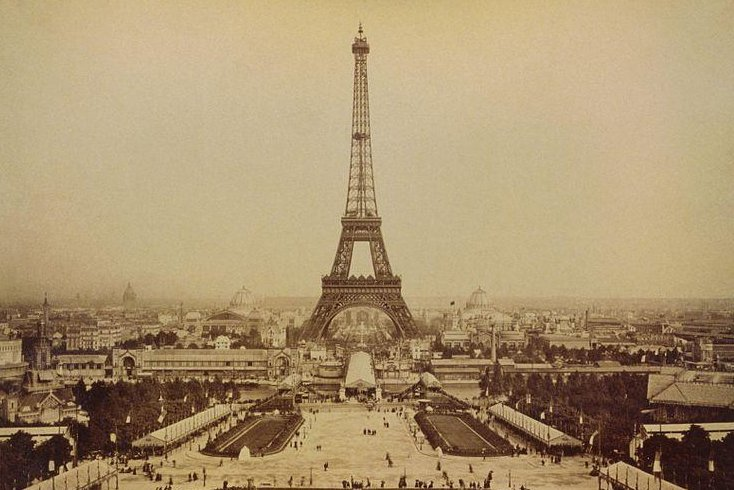

Why Was the Eiffel Tower Built?
The Eiffel Tower was intended to be a showcase of French engineering and a temporary exhibit for the 1889 Exposition Universelle. However, it gained popularity and was later used for scientific experiments, radio transmissions, and tourism.During World War II, the Eiffel Tower was closed to the public. French resistance fighters cut its elevator cables to prevent Nazi soldiers from using it. Hitler himself never climbed it, as he would have had to take the stairs!
Eiffel Tower’s Construction
the tower was built in just over two years, two months, and five days using 18,038 iron parts and 2.5 million rivets. More than 300 workers braved dangerous heights to assemble the structure, and despite the challenges, it was completed ahead of schedule
Historical Significance and Evolution
While initially planned as a temporary structure, the Eiffel Tower defied expectations and became an integral part of French culture. Its strategic use in radio and telecommunications saved it from demolition, proving its importance beyond its aesthetic appeal. Over the decades, it has been repainted every seven years to maintain its iconic look, using approximately 60 tons of paint each time. Today, it serves not only as a tourist attraction but also as a hub for scientific experiments, cultural events, and national celebrations. The Eiffel Tower continues to be a symbol of innovation and resilience, reflecting the grandeur and elegance of Paris.